swords

swords(axe)

fencing
macing

archery

throwing
swords |
swords(axe) |
fencing |
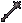 macing |
archery |
throwing |
| 武器画像 | 武器名 | 時期 | 修理 | 基本 Dam. |
速度 [sec] |
装備 条件 |
片手 両手 |
耐久 | 重量 | SPM | |
| Pri. | Sec. | ||||||||||
| bone harvester [ボーンハーベスター] |
AoS | 鍛冶 | 12-16 | 3.00 | 25 | 片手 | 31-70 | 3 | |||
|
broadsword [ブロードソード] |
鍛冶 | 13-17 | 3.25 | 30 | 片手 | 31-100 | 6 | |||
 |
crescent blade [クレセントブレード] |
AoS | 鍛冶 | 12-15 | 2.50 | 55 | 両手 | 51-80 | 1 | ||
 |
cutlass [カットラス] |
鍛冶 | 10-14 | 2.50 | 25 | 片手 | 31-70 | 8 | |||
 |
katana [刀] |
鍛冶 | 10-14 | 2.50 | 25 | 片手 | 31-90 | 6 | |||
 |
longsword [ロングソード] |
鍛冶 | 14-18 | 3.50 | 35 | 片手 | 31-110 | 7 | |||
 |
long sword [ロングソード] |
鍛冶 | 14-18 | 3.50 | 35 | 片手 | 31-110 | 7 | |||
 |
scimitar [シミター] |
鍛冶 | 12-16 | 3.00 | 25 | 片手 | 31-90 | 5 | |||
 |
viking sword [バイキングソード] |
鍛冶 | 15-19 | 3.75 | 40 | 片手 | 31-100 | 6 | |||
 |
butcher knife [肉切り包丁] |
細工 | 10-13 | 2.25 | 5 | 片手 | 31-40 | 1 | |||
 |
cleaver [包丁] |
細工 | 10-14 | 2.50 | 10 | 片手 | 31-50 | 1 | |||
 |
skinning knife [皮はぎナイフ] |
細工 | 10-13 | 2.25 | 5 | 片手 | 31-40 | 1 | |||
 |
pickaxe [つるはし] |
細工 | 12-16 | 3.00 | 50 | 片手 | 31-60 | 11 | |||
 |
bardiche [バルディッシュ] |
鍛冶 | 17-20 | 3.75 | 45 | 両手 | 31-100 | 7 | |||
 |
bladed staff [ブレードスタッフ] |
AoS | 鍛冶 | 14-17 | 3.00 | 40 | 両手 | 31-110 | 4 | ||
| 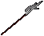 | halberd [ハルバード] |
鍛冶 | 18-21 | 4.00 | 95 | 両手 | 31-80 | 16 | |||
 |
scythe [サイズ] |
AoS | 鍛冶 | 16-19 | 3.50 | 45 | 両手 | 31-100 | 5 | ||
 |
no-dachi [野太刀] |
SE | 鍛冶 | 16-19 | 3.50 | 40 | 両手 | 80 | 10 | ||
 |
wakizashi [脇差] |
SE | 鍛冶 | 10-14 | 2.50 | 20 | 片手 | 50 | 5 | ||
| 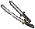 | daisho [大小] |
SE | 鍛冶 | 13-16 | 2.75 | 40 | 両手 | 55 | 8 | ||
| 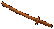 | bokuto [木刀] |
SE | 大工 | 10-12 | 2.00 | 20 | 片手 | 40 | 7 | ||
 |
elven machete [エルフの山刀] |
ML | 鍛冶 | 11-15 | 2.75 | 20 | 片手 | 60 | 6 | ||
 |
rune blade [ルーンブレード] |
ML | 鍛冶 | 14-17 | 3.00 | 30 | 両手 | 60 | 7 | ||
 |
radient scimitar [三日月刀] |
ML | 鍛冶 | 10-14 | 2.50 | 20 | 片手 | 60 | 9 | ||
| 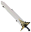 | dread sword [ドレッドソード] |
SA | 鍛冶 | 14-18 | 3.50 | 35 | 片手 | 31-110 | 7 | ||
 |
gargish talwar [タルワール] |
SA | 鍛冶 | 16-19 | 3.50 | 40 | 両手 | 31-110 | 4 | ||
| 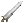 | stone war sword [ウォーソード] |
SA | 石工 | 15-19 | 3.75 | 40 | 片手 | 31-100 | 6 | ||
| 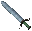 | glass sword [グラスソード] |
SA | 硝工 | 11-15 | 2.75 | 20 | 片手 | 60 | 6 | ||
 |
gargish katana [ガーゴイル刀] |
SA | 鍛冶 | 10-14 | 2.50 | 25 | 片手 | 31-90 | 6 | ||
 |
gargish bone harvester [ガーグボーンハーベスター] |
SA | 鍛冶 | 12-16 | 3.00 | 25 | 片手 | 31-70 | 3 | ||
| 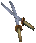 | gargish daisho [ガーゴイル大小] |
SA | 鍛冶 | 13-16 | 2.75 | 40 | 両手 | 55 | 8 | ||
 |
gargish bardiche [ガーグバルディッシュ] |
SA | 鍛冶 | 17-20 | 3.75 | 45 | 両手 | 31-100 | 7 | ||
| 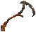 | gargish scythe [ガーゴイルサイズ] |
SA | 鍛冶 | 16-19 | 3.50 | 45 | 両手 | 31-100 | 5 | ||
 |
gargish butcher knife [ガーグ肉切り包丁] |
SA | 細工 | 10-13 | 2.25 | 5 | 片手 | 31-40 | 1 | ||
 |
gargish cleaver [ガーグクリーバー] |
SA | 細工 | 10-14 | 2.50 | 10 | 片手 | 31-50 | 1 | ||
| 武器画像 | 武器名 | 時期 | 修理 | 基本 Dam. |
速度 [sec] |
装備 条件 |
片手 両手 |
耐久 | 重量 | SPM | |
| Pri. | Sec. | ||||||||||
 |
axe [アックス] |
鍛冶 | 14-17 | 3.00 | 35 | 両手 | 31-110 | 4 | |||
 |
battle axe [戦闘斧] |
鍛冶 | 16-19 | 3.50 | 35 | 両手 | 31-70 | 4 | |||
|
double axe [ダブルアックス] |
鍛冶 | 15-18 | 3.25 | 45 | 両手 | 31-110 | 7 | |||
 |
executioner's axe [処刑斧] |
鍛冶 | 15-18 | 3.25 | 40 | 両手 | 31-110 | 8 | |||
 |
large battle axe [戦闘大斧] |
鍛冶 | 17-20 | 3.75 | 80 | 両手 | 31-70 | 6 | |||
 |
two handed axe [両手斧] |
鍛冶 | 16-19 | 3.50 | 40 | 両手 | 31-90 | 8 | |||
| 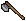 | hatchet [手斧] |
細工 | 13-16 | 2.75 | 20 | 両手 | 31-80 | 4 | |||
 |
ornate axe [装飾仕上げの斧] |
ML | 鍛冶 | 17-20 | 3.75 | 45 | 両手 | 60 | 12 | ||
 |
dual short axes [デュアルアックス] |
SA | 鍛冶 | 14-17 | 3.00 | 35 | 両手 | 31-110 | 4 | ||
 |
gargish axe [ガーゴイル斧] |
SA | 鍛冶 | 14-17 | 3.00 | 35 | 両手 | 31-110 | 4 | ||
| 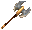 | gargish battle axe [ガーゴイル戦闘斧] |
SA | 鍛冶 | 16-19 | 3.50 | 35 | 両手 | 31-70 | 4 | ||
| 武器画像 | 武器名 | 時期 | 修理 | 基本 Dam. |
速度 [sec] |
装備 条件 |
片手 両手 |
耐久 | 重量 | SPM | |
| Pri. | Sec. | ||||||||||
 |
dagger [ダガー] |
鍛冶 | 10-12 | 2.00 | 10 | 片手 | 31-40 | 1 | |||
|
kryss [クリス] |
鍛冶 | 10-12 | 2.00 | 10 | 片手 | 31-90 | 2 | |||
 |
lance [ランス] |
AoS | 鍛冶 | 18-22 | 4.25 | 95 | 片手 | 31-110 | 12 | ||
 |
warfork [ウォーフォーク] |
鍛冶 | 10-14 | 2.50 | 45 | 片手 | 31-110 | 9 | |||
| 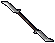 | double bladed staff [ダブルブレード] |
AoS | 鍛冶 | 11-14 | 2.25 | 50 | 両手 | 31-80 | 2 | ||
 |
pike [パイク] |
AoS | 鍛冶 | 14-17 | 3.00 | 50 | 両手 | 31-110 | 8 | ||
 |
short soear [ショートスピア] |
鍛冶 | 10-13 | 2.00 | 40 | 両手 | 31-70 | 4 | |||
 |
spear [スピア] |
鍛冶 | 13-16 | 2.75 | 50 | 両手 | 31-80 | 7 | |||
 |
pitchfork [くまで] |
鍛冶 細工 |
12-15 | 2.50 | 50 | 両手 | 31-60 | 11 | |||
 |
lajatang [ラジャタン] |
SE | 鍛冶 | 16-19 | 3.50 | 65 | 両手 | 85 | 12 | ||
 |
tekagi [手鉤] |
SE | 鍛冶 | 10-13 | 2.00 | 10 | 両手 | 50 | 5 | ||
 |
kama [鎌] |
SE | 鍛冶 | 10-13 | 2.00 | 15 | 両手 | 50 | 7 | ||
 |
sai [サイ] |
SE | 鍛冶 | 10-13 | 2.00 | 15 | 両手 | 60 | 7 | ||
 |
war cleaver [クリーバー] |
ML | 鍛冶 | 10-13 | 2.25 | 15 | 両手 | 60 | 10 | ||
 |
elven spellblade [エルフの呪刀] |
ML | 鍛冶 | 12-15 | 2.50 | 35 | 両手 | 60 | 5 | ||
| assassin spike [暗殺剣] |
ML | 鍛冶 | 10-12 | 2.00 | 15 | 片手 | 60 | 4 | |||
 |
leaf blade [リーフブレード] |
ML | 鍛冶 | 11-15 | 2.75 | 20 | 片手 | 60 | 8 | ||
 |
gargish dagger [ガーゴイルダガー] |
SA | 鍛冶 | 10-12 | 2.00 | 10 | 片手 | 31-40 | 1 | ||
 |
bloodblade [ブラッドブレード] |
SA | 鍛冶 | 10-12 | 2.00 | 10 | 片手 | 60 | 4 | ||
 |
shortblade [ショートブレード] |
SA | 鍛冶 | 10-13 | 2.25 | 10 | 片手 | 60 | 4 | ||
 |
dual pointed spear [デュアルスピア] |
SA | 鍛冶 | 11-14 | 2.25 | 40 | 両手 | 31-80 | 2 | ||
 |
gargish kryss [ガーゴイルクリス] |
SA | 鍛冶 | 10-12 | 2.00 | 10 | 片手 | 31-90 | 2 | ||
 |
gargish tekagi [ガーゴイル手鉤] |
SA | 鍛冶 | 10-13 | 2.00 | 10 | 両手 | 50 | 5 | ||
| 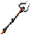 | gargish warfork [ガーグウォーフォーク] |
SA | 鍛冶 | 10-14 | 2.50 | 45 | 片手 | 31-110 | 9 | ||
| 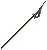 | gargish pike [ガーゴイルパイク] |
SA | 鍛冶 | 14-17 | 3.00 | 50 | 両手 | 31-110 | 8 | ||
 |
gargish lance [ガーゴイルランス] |
SA | 鍛冶 | 18-22 | 4.25 | 95 | 片手 | 31-110 | 12 | ||
| 武器画像 | 武器名 | 時期 | 修理 | 基本 Dam. |
速度 [sec] |
装備 条件 |
片手 両手 |
耐久 | 重量 | SPM | |
| Pri. | Sec. | ||||||||||
 |
hammer pick [ハンマーピック] |
鍛冶 | 13-17 | 3.25 | 45 | 片手 | 31-70 | 9 | |||
| mace [メイス] |
鍛冶 | 11-15 | 2.75 | 45 | 片手 | 31-70 | 14 | ||||
 |
maul [モール] |
鍛冶 | 14-18 | 3.50 | 45 | 片手 | 31-70 | 10 | |||
 |
scepter [セプター] |
AoS | 鍛冶 | 14-18 | 3.50 | 40 | 片手 | 31-110 | 8 | ||
| war axe [ウォーアックス] |
鍛冶 | 12-16 | 3.00 | 50 | 片手 | 31-80 | 8 | ||||
 |
war mace [ウォーメイス] |
鍛冶 | 15-19 | 3.75 | 80 | 片手 | 31-110 | 17 | |||
 |
war hammer [ウォーハンマー] |
鍛冶 | 17-20 | 3.75 | 95 | 両手 | 31-110 | 10 | |||
 |
sledge hammer [スレッジハンマー] |
細工 | 13-17 | 3.25 | 40 | 片手 | 31-60 | 10 | |||
| 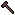 | smith's hammer [鍛冶ハンマー] |
細工 | 13-17 | 3.25 | 40 | 片手 | 31-60 | 8 | |||
 |
black staff [ブラックスタッフ] |
大工 | 13-16 | 2.75 | 35 | 両手 | 31-70 | 6 | |||
 |
club [こん棒] |
大工 | 10-14 | 2.50 | 40 | 片手 | 31-40 | 8 | |||
 |
shepherd's crook [羊飼いの杖] |
大工 | 13-16 | 2.75 | 20 | 両手 | 31-50 | 4 | |||
 |
gnarled staff [自然木の杖] |
大工 | 15-18 | 3.25 | 20 | 両手 | 31-50 | 3 | |||
 |
quarter staff [クォータースタッフ] |
大工 | 11-14 | 2.25 | 30 | 両手 | 31-60 | 4 | |||
 |
wand [ワンド] |
大工 | 11-15 | 2.75 | 5 | 片手 | 31-110 | 1 | |||
 |
crook [牧羊の杖] |
大工 | 13-16 | 2.75 | 20 | 両手 | 31-50 | 3 | |||
 |
nunchaku [ヌンチャク] |
SE | 細工 | 12-15 | 2.50 | 15 | 両手 | 40 | 5 | ||
 |
tessen [鉄扇] |
SE | 鍛冶 | 10-13 | 2.00 | 10 | 両手 | 60 | 6 | ||
 |
testubo [鉄棒] |
SE | 大工 | 12-15 | 2.50 | 35 | 両手 | 60 | 8 | ||
 |
diamond mace [ダイヤモンドメイス] |
ML | 鍛冶 | 13-17 | 3.25 | 35 | 片手 | 60 | 10 | ||
 |
wild staff [ワイルドスタッフ] |
ML | 大工 | 10-13 | 2.25 | 15 | 片手 | 60 | 8 | ||
| 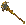 | disc mace [ディスクメイス] |
SA | 鍛冶 | 11-15 | 2.75 | 45 | 片手 | 31-70 | 14 | ||
 |
serpentstone staff [サーペントの石杖] |
SA | 大工 | 16-19 | 3.50 | 35 | 両手 | 31-70 | 3 | ||
| glass staff [グラススタッフ] |
SA | 硝工 | 11-14 | 2.25 | 20 | 両手 | 31-60 | 4 | |||
 |
gargish maul [ガーゴイルモール] |
SA | 鍛冶 | 14-18 | 3.50 | 45 | 片手 | 31-70 | 10 | ||
 |
gargish war hammer [ガーグウォーハンマー] |
SA | 鍛冶 | 17-20 | 3.75 | 95 | 両手 | 31-110 | 10 | ||
| 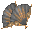 | gargish tessen [ガーゴイル鉄扇] |
SA | 鍛冶 | 10-13 | 2.00 | 10 | 両手 | 60 | 6 | ||
 |
gargish gnarled staff [ガーグ自然木の杖] |
SA | 大工 | 15-18 | 3.25 | 20 | 両手 | 31-50 | 3 | ||
| 武器画像 | 武器名 | 時期 | 修理 | 基本 Dam. |
速度 [sec] |
射程 | 装備 条件 |
耐久 | 重量 | SPM | |
| Pri. | Sec. | ||||||||||
|
bow [弓] |
弓工 | 17-21 | 4.25 | 10 | 30 | 31-60 | 6 | |||
 |
crossbow [クロスボウ] |
弓工 | 18-22 | 4.50 | 8 | 35 | 31-80 | 7 | |||
| heavy crossbow [ヘビークロスボウ] |
弓工 | 20-24 | 5.00 | 8 | 80 | 31-100 | 9 | ||||
 |
composite bow [コンポジットボウ] |
AoS | 弓工 | 16-20 | 4.00 | 10 | 45 | 31-70 | 5 | ||
 |
repeating crossbow [リピーティングクロスボウ] |
AoS | 弓工 | 11-15 | 2.75 | 7 | 30 | 31-80 | 6 | ||
 |
yumi [和弓] |
SE | 弓工 | 13-17 | 3.25 | 10 | 35 | 60 | 8 | ||
 |
elven composite longbow [エルフ式ロングボウ] |
ML | 弓工 | 15-19 | 3.75 | 10 | 45 | 31-70 | 8 | ||
 |
magical shortbow [マジカルショートボウ] |
ML | 弓工 | 12-16 | 3.00 | 10 | 45 | 31-70 | 6 | ||
| 武器画像 | 武器名 | 時期 | 修理 | 基本 Dam. |
速度 [sec] |
射程 | 装備 条件 |
耐久 | 重量 | SPM | |
| Pri. | Sec. | ||||||||||
 |
boomerang [ブーメラン] |
SA | 鍛冶 | 11-15 | 2.75 | 4-7 | 25 | 31-90 | 4 | ||
 |
cyclone [サイクロン] |
SA | 鍛冶 | 13-17 | 3.25 | 6-9 | 40 | 31-90 | 7 | ||
|
soul glaive [ソウルグレイブ] |
SA | 鍛冶 | 16-20 | 4.00 | 8-11 | 60 | 31-90 | 10 | ||